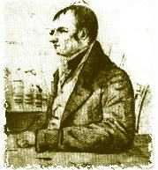

Saturday, September the 25th, 2004
back to: title, date or indexes
This afternoon, whim dictates that I share with readers some famous last words.
“Reynolds! Reynolds! … Reynolds!” — Edgar Allan Poe *
“I suppose I am now becoming a god” — Emperor Vespasian
“All this buttoning and unbuttoning” — Anonymous 17th century suicide
“It was I who discovered leeches have red blood.” Georges Cuvier
* NOTE : Poe was yelling out for Jeremiah Reynolds—not present at his deathbed—an enthusiastic supporter of the hollow earth theories of John Cleve Symmes. Symmes' idea that there were entrances to subterranean worlds at both the Poles was one of the inspirations for Poe's magnificent The Narrative Of Arthur Gordon Pym Of Nantucket.

Symmes : “I declare the earth is hollow, and inhabital within; containing a number of solid concentric spheres, one within the other, and that it is open at the poles or 16 degrees; I pledge my life in support of this truth, and am ready to explore the hollow, if the world will support and aid me in the undertaking.”